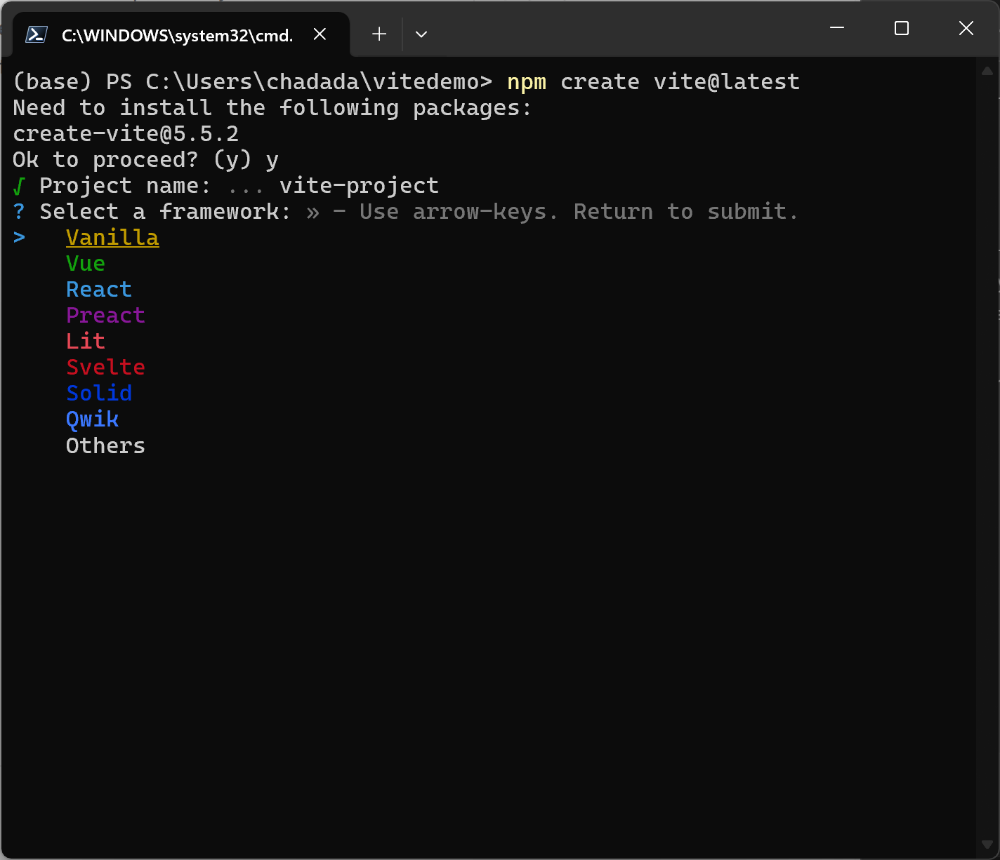

Recommended Technologies
Table of Contents
- TypeScript - Guidance on types and interfaces - Example
- Bootstrapping Web Projects - Vite - Documentation & Recommended Resources - Installing Vite - Bootstrapping a project
- React - Quick note on create-react-app - Documentation & Using older React coding patterns - Best Practices to Organize Your React Codebase - Project Structure - Key Directories and Files - Directory Best Practices - Using React with Entra ID - Resources
- Managing Secrets with Environmental Variables in React Projects Using Vite - Setting Up Environmental Variables - Best Security Practices - Resources
- Common Security Pitfalls in React Applications - Resources
- Incorporating Axios for REST API Calls in React with Bearer Tokens and MSAL - Setting Up Axios - Making API Calls - Resources
The purpose of this page is to review the commonly selected technology options when developing user interface applications. To reiterate from the general guidance section:
Keep in mind that like all software, there is no "right way" to build a user interface application. Leverage and trust your team's or your customer's experience and expertise for the best development experience.
Additionally, while some of these technologies are presented as alternate options, many can be combined together. For example, you can use React in a basic HTML/CSS/JS workflow by inline-importing React along with Babel. See the Add React to a Website for more details. Similarly, any Fast web component can be integrated into any existing React application. And of course, every JavaScript technology can also be used with TypeScript!
TypeScript
TypeScript is JavaScript with syntax for types. TypeScript is a strongly typed programming language that builds on JavaScript, giving you better tooling at any scale. typescriptlang.org
TypeScript is highly recommended for all new web application projects. The stability it provides for teams is unmatched, and can make it easier for folks with C# backgrounds to work with web technologies.
There are many ways to integrate TypeScript into a web application. The easiest way to get started is by reviewing the TypeScript Tooling in 5 Minutes guide from the official TypeScript docs. The other sections on this page contain information regarding integration with TypeScript.
Guidance on types and interfaces
In TypeScript, both type and interface can be used to define the shape of an object. However, it is generally recommended to prefer type over interface for most use cases due to its simplicity and flexibility. It also prevents inheritance when using a type which can badly scale overtime unless explicitly declared.
Example
Using type:
type User = {
name: string;
age: number;
};
Using interface:
interface User {
name: string;
age: number;
}
While both achieve the same result, type can also be used for other TypeScript features like union types, which makes it more versatile.
For more details, refer to the TypeScript Handbook.
Bootstrapping Web Projects
There are many different ways to bootstrap web applications. Two great tool sets to use are create-react-app and vite.
Vite
Vite is a modern build tool that provides a fast and optimized development experience for engineers. It leverages native ES modules in the browser to deliver lightning-fast hot module replacement (HMR) and instant server start. Vite also offers a highly optimized build process using Rollup, ensuring efficient and performant production builds. By simplifying the setup and configuration, Vite allows developers to focus more on writing code and less on tooling, making it an excellent choice for modern web development. For more details, visit the Vite project and Vite GitHub repository.
Documentation & Recommended Resources
- Vite Documentation
- Vite GitHub Repository
- Vite Rollup Plugin
- Vite HMR
- Vite Configuration
- Vite Plugins
- Vite Troubleshooting
From Scaffolding your First Vite Project
Installing Vite
# Install Vite
npm install -D vite
Bootstrapping a project
npm create vite@latest

React
React is a framework developed and maintained by Meta (Formerly Facebook). React is used throughout Microsoft's product stack and has a vast open source community.
Quick note on create-react-app
create-react-app is deprecated as of January 2023 and should be avoided for new projects. It is recommended to use more modern tools like Vite for better performance and flexibility. For more details, refer to the official React blog and Vite documentation.
From Adding TypeScript
npx create-react-app my-app --template typescript
Documentation & Using older React coding patterns
One can expect to find a multitude of guides, answers, and posts on how to work with React; don't take everything at face value. The best place to review React concepts is the React documentation. From there, you can review articles from various sources such as React Community Articles, Kent C Dodd's Blog, CSS Tricks Articles, and Awesome React.
The React API has changed dramatically over time. Older resources may contain solutions or patterns that have since been changed and improved upon. Modern React development uses the React Hooks pattern. Rarely will you have to implement something using React Class pattern. If you're reading an article/answer/docs that instruct you to use the class pattern you may be looking at an out-of-date resource.
Best Practices to Organize Your React Codebase
Organizing your React codebase effectively can improve maintainability, scalability, and collaboration. Here are some best practices to follow:
Project Structure
A well-structured project can make it easier to navigate and manage your codebase. Here's a recommended project structure:
my-react-app/
├── public/
│ ├── index.html
│ └── assets/
│ ├── favicon.ico
│ └── logo.png
├── src/
│ ├── assets/
│ │ └── styles/
│ │ └── main.css
│ ├── components/
│ │ ├── Button/
│ │ │ ├── Button.tsx
│ │ │ └── Button.test.tsx
│ │ └── Header/
│ │ ├── Header.tsx
│ │ └── Header.test.tsx
│ ├── hooks/
│ │ └── useAuth.ts
│ ├── pages/
│ │ ├── Home/
│ │ │ ├── Home.tsx
│ │ │ └── Home.test.tsx
│ │ └── About/
│ │ ├── About.tsx
│ │ └── About.test.tsx
│ ├── services/
│ │ └── apiClient.ts
│ ├── types/
│ │ └── index.ts
│ ├── utils/
│ │ └── helpers.ts
│ ├── App.tsx
│ ├── index.tsx
│ └── vite-env.d.ts
├── .env
├── .gitignore
├── package.json
├── tsconfig.json
└── vite.config.ts
Key Directories and Files
- public/: Contains static assets like HTML and images.
- src/: Contains the source code of your application. - assets/: Contains global assets like styles and images. - components/: Contains reusable UI components, each in its own folder. - hooks/: Contains custom React hooks. - pages/: Contains page components, each in its own folder. - services/: Contains service modules for API calls and other business logic. - types/: Contains TypeScript type definitions. - utils/: Contains utility functions. - App.tsx: The root component of your application. - index.tsx: The entry point of your application. - vite-env.d.ts: TypeScript definitions for Vite-specific features.
Directory Best Practices
- Component-Based Structure: Organize your code into small, reusable components.
- Type Safety: Use TypeScript to define types and interfaces for your components and data structures.
- Custom Hooks: Encapsulate reusable logic in custom hooks.
- Service Layer: Abstract API calls and business logic into service modules.
- Consistent Naming: Follow a consistent naming convention for files and directories.
- Environment Variables: Use environment variables to manage configuration settings.
- Testing: Write unit tests for your components, hooks, and services.
Using React with Entra ID
Integrating React applications with Entra ID (formerly Azure Active Directory) allows you to secure your web applications with enterprise-grade authentication and authorization. This can be achieved using the Microsoft Authentication Library (MSAL).
To get started with Entra ID in your React application, follow these steps:
-
Install MSAL:
npm install @azure/msal-browser @azure/msal-react -
Configure MSAL: Create a configuration file to set up your MSAL instance with your Entra ID credentials.
```typescript import { PublicClientApplication, Configuration } from "@azure/msal-browser"; const msalConfig: Configuration = { auth: { clientId: "your-client-id", authority: "//login.microsoftonline.com/your-tenant-id", redirectUri: "//localhost:3000", }, }; export const msalInstance = new PublicClientApplication(msalConfig); ``` -
Wrap Your Application: Use the
MsalProviderto wrap your React application.```typescript import React from "react"; import ReactDOM from "react-dom"; import { MsalProvider } from "@azure/msal-react"; import { msalInstance } from "./authConfig"; import App from "./App"; ReactDOM.render( <MsalProvider instance={msalInstance}> <App /> </MsalProvider>, document.getElementById("root") ); ```
Managing Secrets with Environmental Variables in React Projects Using Vite
When developing React applications, it's crucial to manage sensitive information such as API keys, database credentials, and other secrets securely. Vite provides a straightforward way to handle environmental variables.
Setting Up Environmental Variables
-
Create an
.envFile: In the root of your project, create a file named.env. This file will store your environmental variables.VITE_API_KEY=[sample API Key] VITE_API_URL=[sample URL] -
Access Environmental Variables in Your Code: Vite prefixes all environmental variables with
VITE_to ensure they are exposed to your client-side code. You can access these variables usingimport.meta.env.const apiKey: string = import.meta.env.VITE_API_KEY as string; const apiUrl: string = import.meta.env.VITE_API_URL as string; fetch(`${apiUrl}/endpoint`, { headers: { 'Authorization': `Bearer ${apiKey}` } }) .then(response => response.json()) .then(data => console.log(data)) .catch(error => console.error('Error fetching data:', error));
Best Security Practices
- Do Not Commit
.envFiles: Ensure your.envfile is added to.gitignoreto prevent it from being committed to your version control system.# .gitignore .env
- Use Environment-Specific Files:
Vite supports multiple environment files for different stages of development. For example, you can create
.env.developmentand.env.productionfiles to manage variables for development and production environments, respectively.# .env.development VITE_API_URL=[example value] # .env.production VITE_API_URL=[example value]
- Validate Environmental Variables:
Consider using a validation library like
zod( https://github.com/colinhacks/zod ) orjoi( joi.dev ) to validate your environmental variables at runtime, ensuring they meet the required format and constraints.
Common Security Pitfalls in React Applications
When developing React applications, it's crucial to follow best practices to safeguard your application from common security vulnerabilities. Here are some key things to avoid:
1. Do Not Store Sensitive Data in Local Storage
Local storage is accessible from any JavaScript code running on the same domain, making it a potential target for attackers. Avoid storing sensitive information like tokens or user data in local storage.
Bearer Tokens in sessionStorage and localStorage should be strictly avoided!
2. Avoid Using dangerouslySetInnerHTML
Using dangerouslySetInnerHTML can expose your application to XSS attacks. Always sanitize any HTML content before rendering it.
```typescript
// Avoid this
<div dangerouslySetInnerHTML={{ __html: userContent }} />
// Prefer this
import DOMPurify from 'dompurify';
const sanitizedContent: string = DOMPurify.sanitize(userContent);
<div dangerouslySetInnerHTML={{ __html: sanitizedContent }} />
```
3. Do Not Expose API Keys in the Frontend
Exposing API keys in your frontend code can lead to unauthorized access to your backend services. Use environment variables and server-side code to keep your API keys secure.
4. Do Not Ignore Security Updates
Regularly update your dependencies to include the latest security patches. Use tools like npm audit to identify and fix vulnerabilities in your project.
5. Avoid Using Untrusted Third-Party Libraries
Only use third-party libraries from trusted sources. Review the library's code and check for any known vulnerabilities before including it in your project.
Incorporating Axios for REST API Calls in React with Bearer Tokens and MSAL
When building React applications that interact with REST APIs, Axios is a popular library for making HTTP requests. Combined with MSAL, you can securely call APIs using Bearer tokens for authentication.
Setting Up Axios
-
Install Axios:
npm install axios -
Create an Axios Instance: Configure an Axios instance to include the Bearer token in the Authorization header for all requests.
import axios, { AxiosRequestConfig } from 'axios'; import { msalInstance } from './authConfig'; import { AuthenticationResult } from '@azure/msal-browser'; const apiClient = axios.create({ baseURL: '[sample URL]', }); apiClient.interceptors.request.use(async (config: AxiosRequestConfig) => { const accounts = msalInstance.getAllAccounts(); if (accounts.length > 0) { const request = { scopes: ['api://your-api-scope/.default'], account: accounts[0], }; const response: AuthenticationResult = await msalInstance.acquireTokenSilent(request); if (response && response.accessToken) { config.headers = { ...config.headers, Authorization: `Bearer ${response.accessToken}`, }; } } return config; }); export default apiClient;
Making API Calls
Use the configured Axios instance to make API calls within your React components.
import React, { useEffect, useState } from 'react';
import apiClient from './apiClient';
interface DataType {
// Define the shape of your data here
id: number;
name: string;
// Add other fields as necessary
}
const MyComponent: React.FC = () => {
const [data, setData] = useState<DataType | null>(null);
useEffect(() => {
const fetchData = async () => {
try {
const response = await apiClient.get<DataType>('/endpoint');
setData(response.data);
} catch (error) {
console.error('Error fetching data', error);
}
};
fetchData();
}, []);
return (
<div>
{data ? <pre>{JSON.stringify(data, null, 2)}</pre> : 'Loading...'}
</div>
);
};
export default MyComponent;